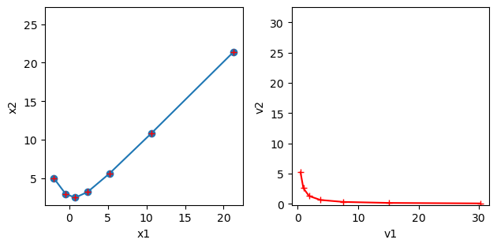
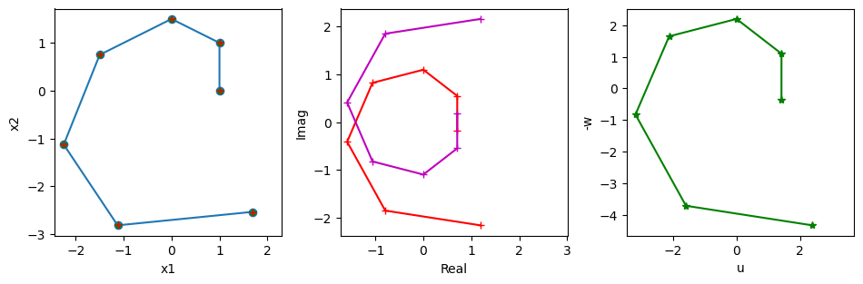

Real and Complex Eigenvalues#
import numpy as np
import matplotlib.pyplot as plt
%matplotlib inline
Eigenvalues of a 2x2 matrix#
Let us take the simplest and the most important case of 2 by 2 matrix
We can analytically derive the eigenvalues from
as
The corresponding eigenvectors are not unique, but given by, for example,
Real eigenvalues#
When \(\frac{(a-d)^2}{4}+ bc \ge 0\), \(A\) has two real eigenvalues \(\{\lambda_1, \lambda_2\}\) with corresponding eigenvectors \(\{ \b{v}_1, \b{v}_2 \}\)
The movement of a point \(\b{x}\) by \(A\) as \(A\b{x}, A^2\b{x}, A^3\b{x},...\) is composed of movements in the directions of the eigenvectors \(\{ \b{v}_1, \b{v}_2 \}\). It is convergent if \(|\lambda_i|<1\) and divergent if \(|\lambda_i|>1.\)
# take a 2x2 matrix
A = np.array([[1.5, 0.5], [1, 1]])
# check the eigenvalues and eigenvectors
L, V = np.linalg.eig(A)
print("L =", L)
print("V = ", V)
# take a point and see how it moves
K = 7 # steps
x = np.zeros((2, K))
x[:,0] = [-2, 5]
for k in range(K-1):
x[:,k+1] = A @ x[:,k] # x_{k+1} = A x_k
# plot the trajectory
plt.subplot(1,2,1)
plt.plot( x[0], x[1], 'o-')
plt.axis('square'); plt.xlabel("x1"); plt.ylabel("x2");
# In the eigenspace
y = np.zeros((2, K))
y[:,0] = np.linalg.inv(V) @ x[:,0] # map to eigenspace
for k in range(K-1):
y[:,k+1] = L*y[:,k] # z_{k+1} = L z_k
plt.subplot(1,2,2)
plt.plot( y[0], y[1], 'r+-')
plt.axis('square'); plt.xlabel("v1"); plt.ylabel("v2");
# Convert back to the original space
plt.subplot(1,2,1)
xv = (V @ y).real
plt.plot( xv[0], xv[1], 'r+')
plt.tight_layout(); # adjust the space
L = [2. 0.5]
V = [[ 0.70710678 -0.4472136 ]
[ 0.70710678 0.89442719]]

Complex eigenvalues#
When \(\frac{(a-d)^2}{4}+ bc < 0\), \(A\) has a pair of complex eigenvalues
where
with corresponding eigenvectors
By eigendecomposition \( A = V \Lambda V^{-1}, \) a point \(\b{x}\) is converted to points in a complex plane and multiplied by a complex eigenvalue, which means rotation and scaling. Points in the complex plane are then converted back in a real vector space by multiplication with \(V\).
To see the rotation and scaling more explicitly, we can represent \(\Lambda=\mat{\alpha+i\beta & 0 \\ 0 & \alpha-i\beta}\) as
where \(R\) is
Here \(r=|\lambda|=\sqrt{\alpha^2+\beta^2}\) is the scaling factor and \(\theta\) is the angle of rotation.
We can choose \(U\) as
such that \(VU = (\b{u}, -\b{w})\).
Then we have another decomposition of \(A\) as
# take a 2x2 matrix
A = np.array([[1, -1], [1, 0.5]])
# check the eigenvalues and eigenvectors
L, V = np.linalg.eig(A)
print("L =", L)
print("V = ", V)
# take a point and see how it moves
K = 7 # steps
x = np.zeros((2, K))
x[:,0] = [1, 0]
for k in range(K-1):
x[:,k+1] = A @ x[:,k] # x_{k+1} = A x_k
# plot the trajectory
plt.subplot(1,3,1)
plt.plot( x[0], x[1], 'o-')
plt.axis('square'); plt.xlabel("x1"); plt.ylabel("x2");
# In the eigenspace
z = np.zeros((2, K), dtype=complex)
z[:,0] = np.linalg.inv(V) @ x[:,0]
for k in range(K-1):
z[:,k+1] = L*z[:,k] # z_{k+1} = L z_k
plt.subplot(1,3,2)
plt.plot( z[0].real, z[0].imag, 'r+-')
plt.plot( z[1].real, z[1].imag, 'm+-')
plt.axis('square'); plt.xlabel("Real"); plt.ylabel("Imag");
# In the cos-sin space
VU = np.c_[V[:,0].real, -V[:,0].imag]
R = np.array([[L[0].real, -L[0].imag], [L[0].imag, L[0].real]])
print("R =", R)
print("VU =", VU)
y = np.zeros((2, K))
y[:,0] = np.linalg.inv(VU) @ x[:,0]
for k in range(K-1):
y[:,k+1] = R @ y[:,k] # y_{k+1} = R y_k
plt.subplot(1,3,3)
plt.plot( y[0], y[1], 'g*-')
plt.axis('square'); plt.xlabel("u"); plt.ylabel("-w");
# Convert back to the original space
plt.subplot(1,3,1)
xc = (V @ z).real
xr = VU @ y
plt.plot( xr[0], xr[1], 'g*')
plt.plot( xc[0], xc[1], 'r+')
plt.tight_layout(rect=[0, 0, 1.5, 1]); # fit in extra width
L = [0.75+0.96824584j 0.75-0.96824584j]
V = [[0.70710678+0.j 0.70710678-0.j ]
[0.1767767 -0.6846532j 0.1767767 +0.6846532j]]
R = [[ 0.75 -0.96824584]
[ 0.96824584 0.75 ]]
VU = [[ 0.70710678 -0. ]
[ 0.1767767 0.6846532 ]]

The trajectory in the complex space or the \((\b{u},-\b{w})\) space is a regular spirals, which is mapped to a skewed spiral in the original space.